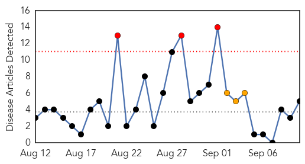
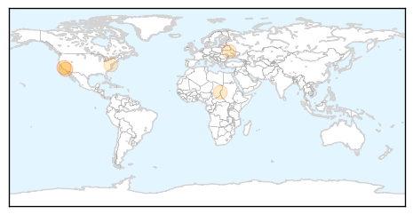
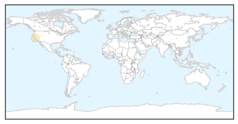

Measles
30-Day Web Trend
3 alerts, 3 warnings

30-Day Twitter Trend
0 alerts, 0 warnings

Article Locations
Article Confidences

Top Articles:
- 0.900
- SB792: Calif. Senate Approves Bill to Protect Children in Day Care, Heads to Governor's Desk
- 0.898
- Day Care Center Worker Vaccination Bill Approved by State Senate, Heads to Governor’s Desk
- 0.698
- World News
- 0.649
- Darfur: UN humanitarian officials deplore fatal attack on health workers
- 0.600
- Americas Region Free Of Rubella
Top Tweets:
-
No tweets found for Sep 10, 2015
Mold/Fungal
30-Day Web Trend
0 alerts, 0 warnings

30-Day Twitter Trend
0 alerts, 0 warnings

Article Locations
Article Confidences

Top Articles:
Top Tweets:
-
No tweets found for Sep 10, 2015